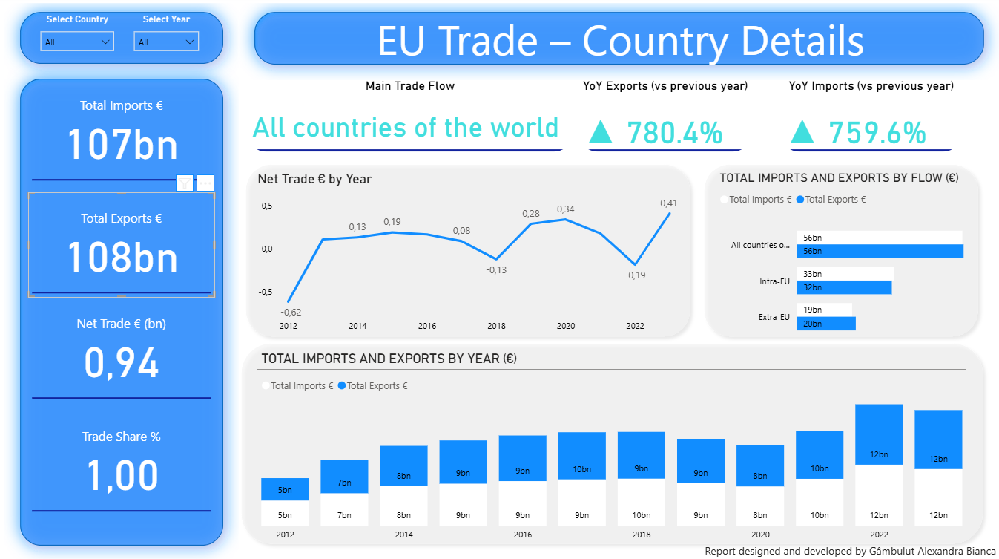
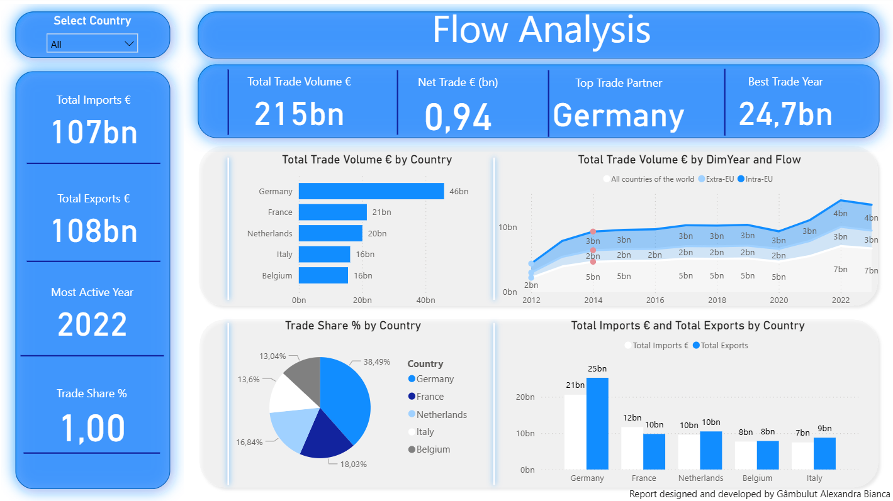
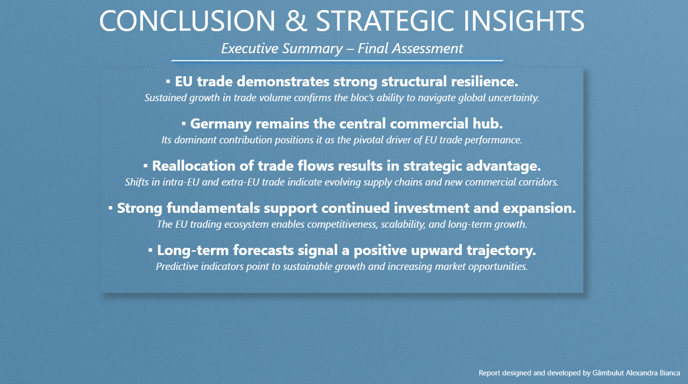

📊 EU Trade Analysis – Power BI Dashboard
🏡 Home📌 Project Overview
This dashboard analyzes the evolution of imports and exports within the European Union, highlighting trade trends, partner countries and growth dynamics. The goal of the report is to understand the trade flows between EU and non-EU countries, and identify key trade indicators and insights.
📉 Dashboard Screenshots

Main overview – Imports, Exports & Partners

Country Trade Details

Trade Flow Analysis

Trends over time

Strategic Insights
📌 Key Insights
- Total Trade Volume: €215bn
- Total Imports: €107bn
- Total Exports: €108bn
- Top Trade Partner: Germany
- Most active trade year: 2022
Germany represents the largest share of total imports and exports.
🎓 What I Learned
- Data modeling and large dataset exploration
- Visual storytelling & UX in dashboards
- Trade flow analysis between regions
- Building multi-page Power BI dashboards
- Using data-driven business insights